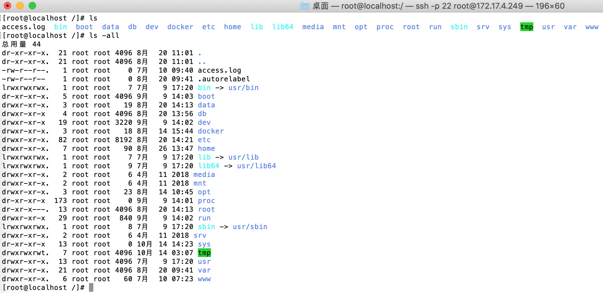

Linux下的目录都是做什么⽤的?

/bin
系统有很多放置执行档的目录，但/bin比较特殊。因为/bin放置的是在单⼈维护模式下还能够被操作的指令。在/bin底下的指令可以被root与一般帐号所使用，主要有: cat,chmod(修改权限), chown, date, mv, mkdir, cp, bash等等常用的指令。
/boot
主要放置开机会使用到的档案，包括Linux核⼼档案以及开机选单与开机所需设定档等等。Linux kernel常⽤的档名为:vmlinuz，如果使⽤的是grub这个开机管理程式，则还会存在/boot/grub/这个⽬录。
/dev
在Linux系统上，任何装置与周边设备都是以档案的型态存在于这个⽬录当中。只要通过存取这个⽬录下的某个档案，就等于存取某个装置。比较重要的档案有/dev/null, /dev/zero, /dev/tty , /dev/lp, / dev/hd, /dev/sd*等等
/etc
系统主要的设定档⼏乎都放置在这个目录内，例如⼈员的帐号密码档、各种服务的启始档等等。 一般来说，这个目录下的各档案属性是可以让⼀般使⽤者查阅的，但是只有root有权⼒修改。 FHS建议不要放置可执⾏档(binary)在这个⽬目录中。 ⽐较重要的档案有:/etc/inittab, /etc/init.d/, /etc/modprobe.conf, /etc/X11/, /etc/fstab, /etc/sysconfig/等等。 另外，其下重要的⽬录有:/etc/init.d/ :所有服务的预设启动 script都是放在这里的，例如要启动或者关闭iptables的话: /etc/init.d/iptables start、/etc/init.d/ iptables stop/etc/xinetd.d/ :这就是所谓的super daemon管理的 各项服务的设定档目录。/etc/X11/ :与X Window有关的各种设定档都在这⾥，尤其是xorg.conf或XF86Config这两个X Server的设定档。
/home
这是系统预设的使⽤者家⽬录(home directory)。 在你新增⼀个⼀般使⽤者帐号时， 预设的使⽤者家⽬录都会规范到这⾥来。⽐较重要的是，家⽬录有两种代号： ~ ：代 表当前使⽤者的家⽬录，⽽ ~guest：则代表⽤户名为guest的家⽬录。
/lib
系统的函式库⾮常的多，⽽/lib放置的则是在开机时会⽤到的函式库，以及在/bin 或/sbin底下的指令会呼叫的函式库⽽已 。什么是函式库呢？你可以将他想象成是外挂，某些指令必须要有这些外挂才能够顺利完成程式的执⾏之意。 尤其重要的 是/lib/modules/这个⽬录，因为该⽬录会放置核⼼相关的模组(驱动程式)。
/media
media是媒体的英⽂，顾名思义，这个/media底下放置的就是可移除的装置。 包括软 碟、光碟、DVD等等装置都暂时挂载于此。 常⻅的档名有：/media/floppy, /media/cdrom等等。
/mnt
如果你想要暂时挂载某些额外的装置，⼀般建议你可以放置到这个⽬录中。在很早时候，这个⽬录的⽤途与/media相同啦。 只是有了/media之后，这个⽬录就⽤来暂时挂载⽤了。
/opt
这个是给第三⽅协⼒软体放置的⽬录。什么是第三⽅协⼒软体啊？举例来说，KDE这 个桌⾯管理系统是⼀个独⽴的计画，不过他可以安装到Linux系统中，因此KDE的软体 就建议放置到此⽬录下了。另外，如果你想要⾃⾏安装额外的软体(⾮原本的 distribution提供的)，那么也能够将你的软体安装到这⾥来。不过，以前的Linux系统中，我们还是习惯放置在/usr/local⽬录下。
/root
系统管理员(root)的家⽬录。 之所以放在这⾥，是因为如果进⼊单⼈维护模式⽽仅挂载根⽬录时，该⽬录就能够拥有root的家⽬录，所以我们会希望root的家⽬录与根⽬录放置在同⼀个分区中。
/sbin
Linux有⾮常多指令是⽤来设定系统环境的，这些指令只有root才能够利⽤来设定系统，其他使⽤者最多只能⽤来查询⽽已。放在/sbin底下的为开机过程中所需要的，⾥⾯包括了开机、修复、还原系统所需要的指令。⾄于某些伺服器软体程式，⼀般则放置到/usr/sbin/当中。⾄于本机⾃⾏安装的软体所产⽣的系统执⾏档(system binary)， 则放置到/usr/local/sbin/当中了。常⻅的指令包括：fdisk, fsck, ifconfig, init, mkfs等等。
/srv
srv可以视为service的缩写，是⼀些⽹路服务启动之后，这些服务所需要取⽤的资料⽬录。常⻅的服务例如WWW, FTP等等。 举例来说，WWW是服器需要的⽹⻚资料就可以放置在/srv/www/⾥⾯。呵呵，看来平时我们编写的代码应该放到这⾥了。
/tmp
这是让⼀般使⽤者或者是正在执⾏的程序暂时放置档案的地⽅。这个⽬录是任何⼈都能够存取的，所以你需要定期的清理⼀下。当然，重要资料不可放置在此⽬录啊。 因为FHS甚⾄建议在开机时，应该要将/tmp下的资料都删除。